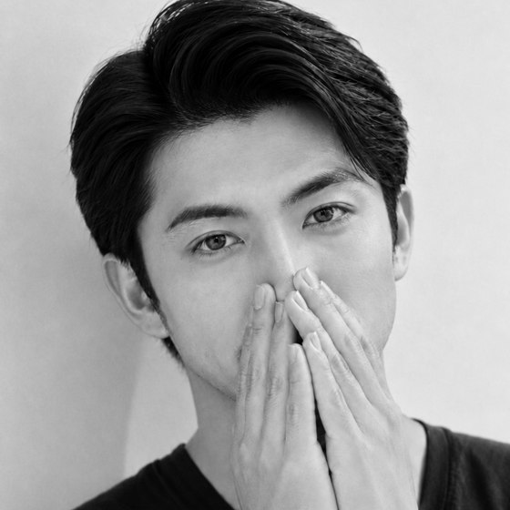

あの人の気持ち、|教えるよ。
連絡がこない、|本当の理由は？
復縁できる？|このまま待つべき？
その悩み、10分だけ|話してみませんか。
彼の気持ちが、わからない夜に。声で、話してみませんか。
＼ 登録は30秒・しつこい連絡はしません ／

恋愛・復縁・相手の気持ちを中心に、これまで2万人以上の相談と向き合ってきました。
恋の悩みは、誰にも言えないほどひとりで大きくなっていくもの。
＼ どんな小さな悩みでも大丈夫 ／
同じように悩んでいた方が、いま 笑顔で 送ってくれた言葉です。
彼の気持ちも、これからの恋も。まずは声で、話してみてください。
＼ 登録は30秒・一言送るだけ ／